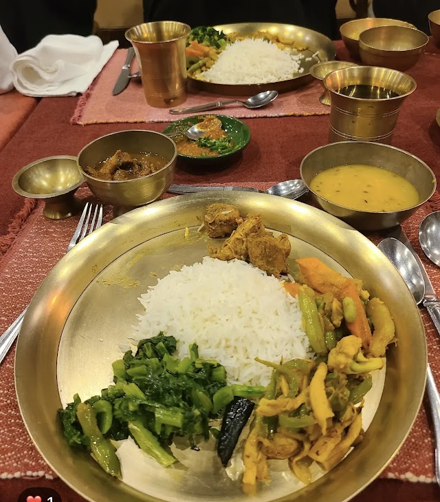
| 営業時間 | 月・火・水・木・金・土・日 10:00〜22:00 |
|---|---|
| 定休日 | なし(要最終確認) |
| 住所 | Dilli Bazar Height Marg, Kathmandu 44600 ネパール |
| 予約 | 可 — ☎ 01-4520169 ／ 公式サイト |
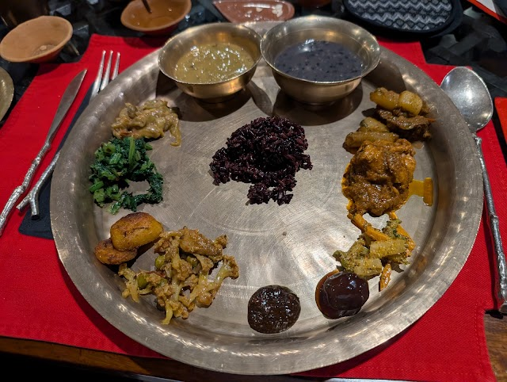
| 営業時間 | 月・火・水・木・金・土・日 18:00〜22:00 |
|---|---|
| 定休日 | なし(要最終確認) |
| 住所 | Battisputali Rd, Kathmandu 44600 ネパール |
| 予約 | 可 — ☎ 01-4579488 ／ 公式サイト |
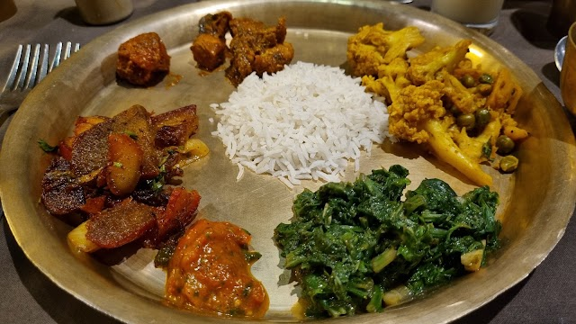
| 営業時間 | 月・火・水・木・金・土・日 10:00〜22:00 |
|---|---|
| 定休日 | なし(要最終確認) |
| 住所 | Lazimpat , Behind Hotel Gangjong, Kathmandu 44600 ネパール |
| 予約 | 可 — ☎ 01-4002009 ／ 公式サイト |
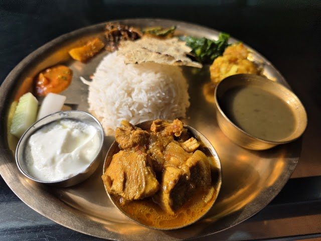
| 営業時間 | 月・火・水・木・金・土・日 9:00〜23:00 |
|---|---|
| 定休日 | なし(要最終確認) |
| 住所 | Chaksibari Marg, काठमाडौं 44600 ネパール |
| 予約 | 可 — 公式サイト |
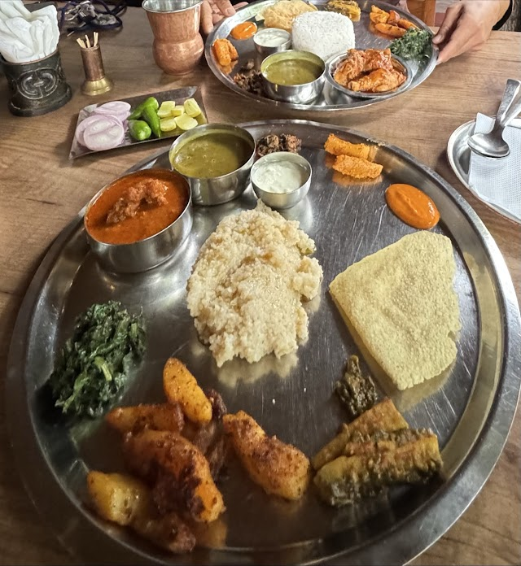
| 営業時間 | 月・火・水・木・金・土・日 10:30〜21:00 |
|---|---|
| 定休日 | なし(要最終確認) |
| 住所 | Gairidhara Rd, Kathmandu 44600 ネパール |
| 予約 | 可 — ☎ 01-4512462 |
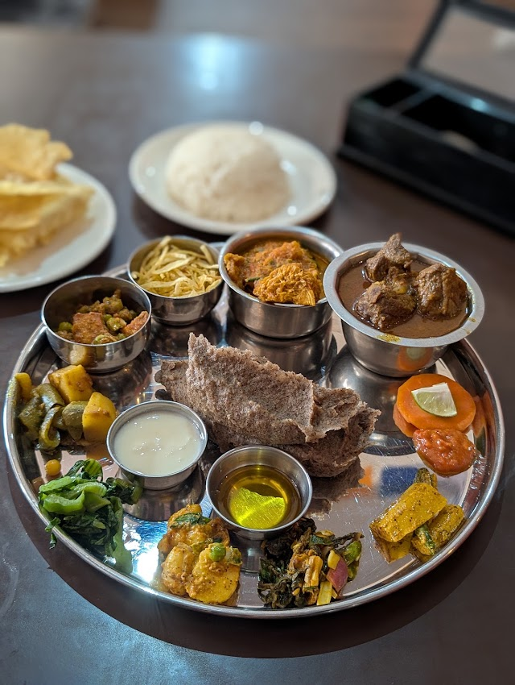
| 営業時間 | 月・火・水・木・金・土・日 10:00〜22:00 |
|---|---|
| 定休日 | なし(要最終確認) |
| 住所 | Paknajol marga, Chhetrapati, Thamel, Kathmandu 44600 ネパール |
| 予約 | 可 — ☎ 01-5358243 |
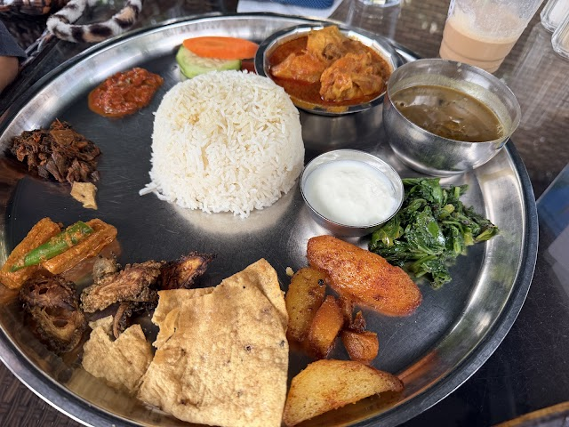
| 営業時間 | 月・火・水・木・金・土・日 10:00〜22:00 |
|---|---|
| 定休日 | なし(要最終確認) |
| 住所 | 777 Jhamsikhel Road, Lalitpur 44600 ネパール |
| 予約 | 可 — ☎ 01-5444011 ／ 公式サイト |
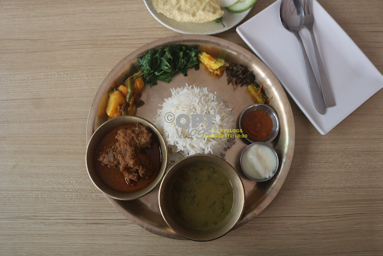
| 営業時間 | 月・火・水・木・金・土・日 10:00〜22:30 |
|---|---|
| 定休日 | なし(要最終確認) |
| 住所 | 26 Thamel Marg, Kathmandu 44600 ネパール |
| 予約 | 可 — ☎ 984-1386119 |
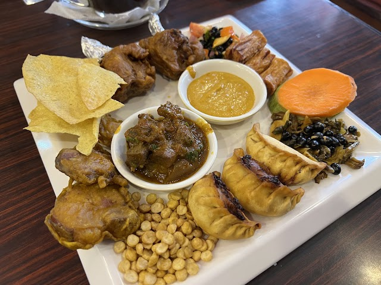
| 営業時間 | 月・火・水・木・金・土・日 10:00〜22:00 |
|---|---|
| 定休日 | なし(要最終確認) |
| 住所 | JP Rd, Kathmandu 44600 ネパール |
| 予約 | 可 — ☎ 01-5312911 |
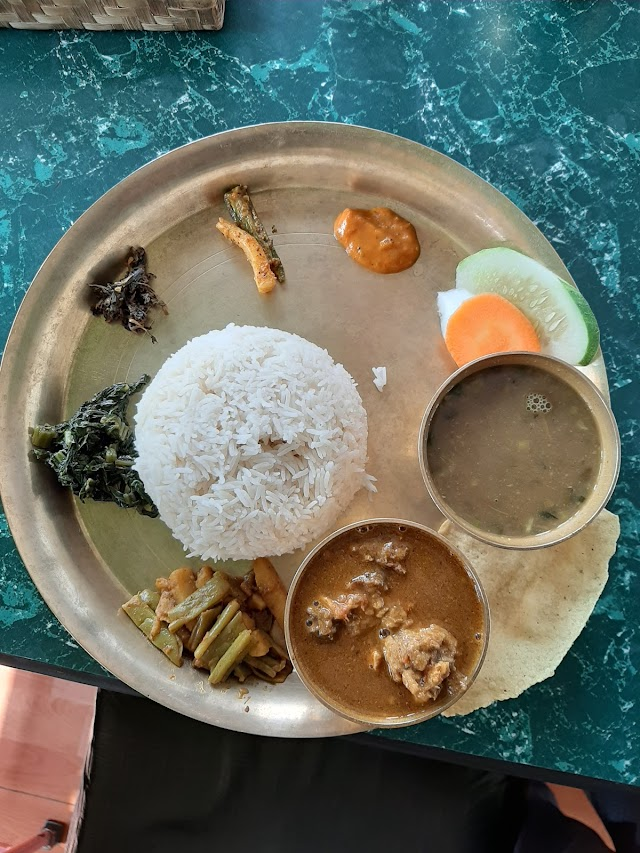
| 営業時間 | 月・火・水・木・金・土・日 9:00〜21:00 |
|---|---|
| 定休日 | なし(要最終確認) |
| 住所 | 〒44600 パタン M8F7+2V4 |
| 予約 | 可 — ☎ 01-5554583 |
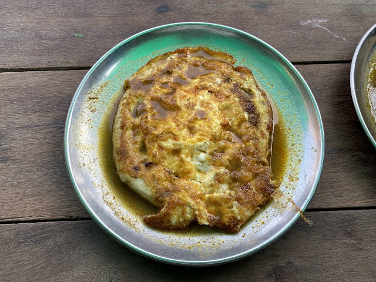
| 営業時間 | 月・火・水・木・金・土・日 13:00〜19:00 |
|---|---|
| 定休日 | なし(要最終確認) |
| 住所 | 〒44700 パタン |
| 予約 | 要確認 — ☎ 984-1460984 ／ 公式サイト |
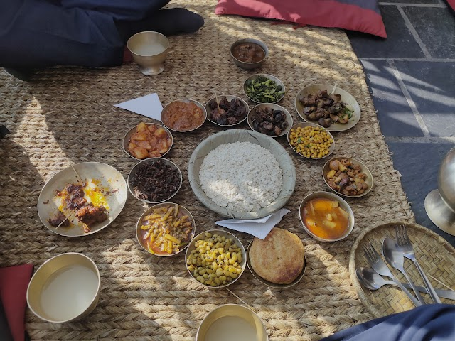
| 営業時間 | 月・火・水・木・金・土・日 10:00〜21:30 |
|---|---|
| 定休日 | なし(要最終確認) |
| 住所 | 〒015306000 キルティプル M7HF+JRJ |
| 予約 | 可 — ☎ 984-1330533 |
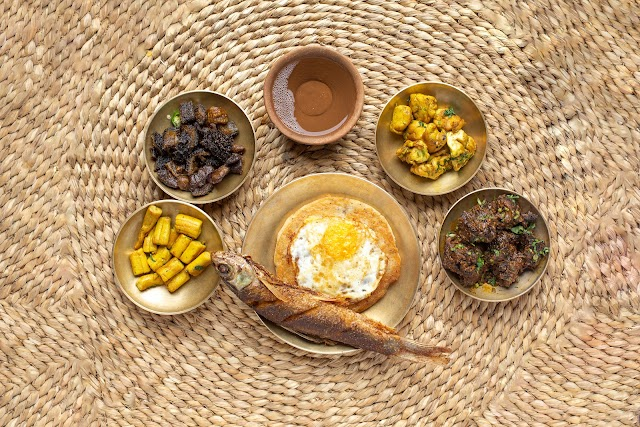
| 営業時間 | 月・火・水・木・金・土・日 10:00〜22:00 |
|---|---|
| 定休日 | なし(要最終確認) |
| 住所 | Kirtipur, Kathmandu 44600 ネパール |
| 予約 | 可 — ☎ 01-5907942 ／ 公式サイト |
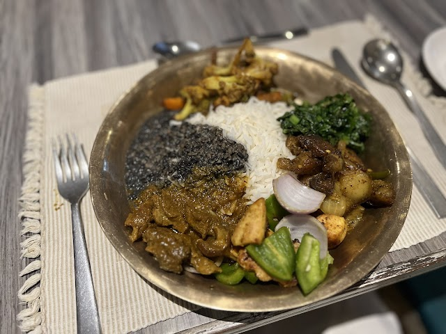
| 営業時間 | 月・火・水・木・金 7:30〜22:00 ／ 土・日 8:00〜22:00 |
|---|---|
| 定休日 | なし(要最終確認) |
| 住所 | 1 Thamel Marg, Kathmandu 44600 ネパール |
| 予約 | 可 — ☎ 01-4510388 ／ 公式サイト |
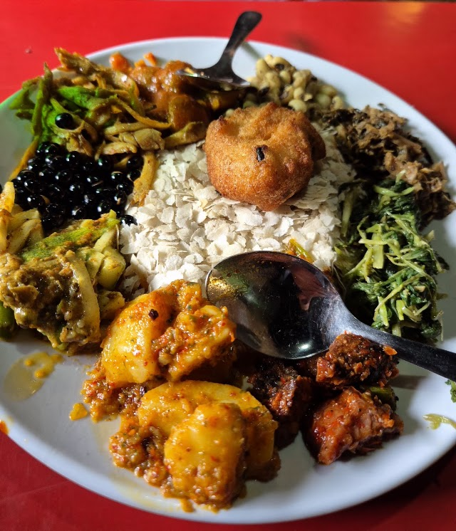
| 営業時間 | 月・火・水・木・金・土・日 11:00〜20:00 |
|---|---|
| 定休日 | なし(要最終確認) |
| 住所 | Swotha Rd, Lalitpur 44600 ネパール |
| 予約 | 要確認 — ☎ 984-1860857 |
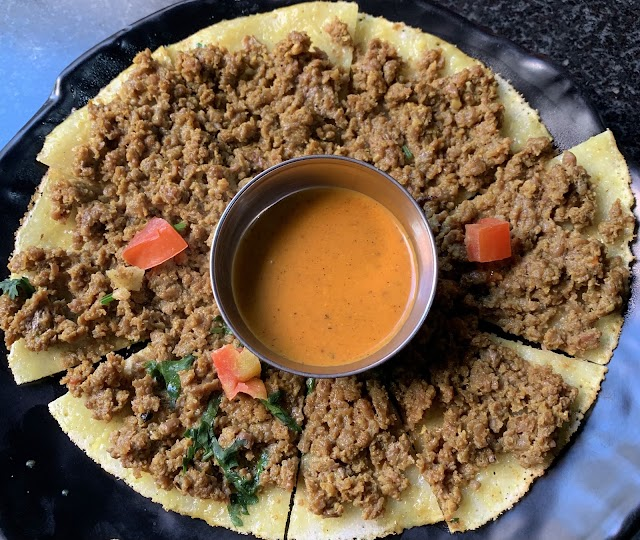
| 営業時間 | 月・火・水・木・金・日 13:00〜21:00 ／ 土 15:00〜21:00 |
|---|---|
| 定休日 | なし(要最終確認) |
| 住所 | P8C5+7GC, Naya Bazaar Marg, Kathmandu 44600 ネパール |
| 予約 | 可 — ☎ 01-4960223 |
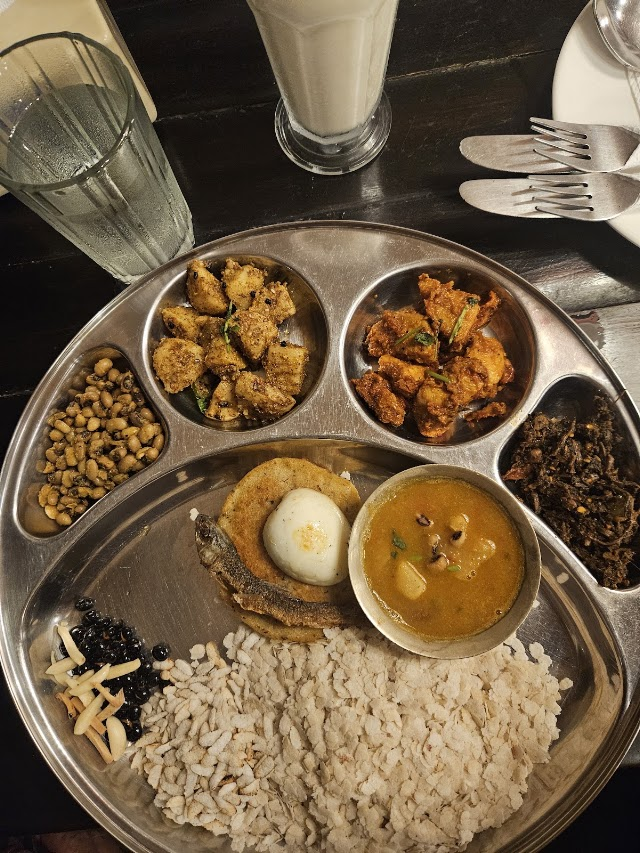
| 営業時間 | 月・火・水・木・金・土・日 10:00〜21:00 |
|---|---|
| 定休日 | なし(要最終確認) |
| 住所 | 〒44601 パタン |
| 予約 | 可 — ☎ 980-1989535 |
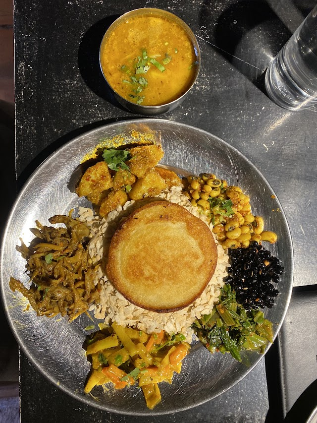
| 営業時間 | 月・火・水・木・金・土・日 11:00〜21:30 |
|---|---|
| 定休日 | なし(要最終確認) |
| 住所 | Gangalal Marg, Kathmandu 44600 ネパール |
| 予約 | 可 — ☎ 980-1246333 ／ 公式サイト |
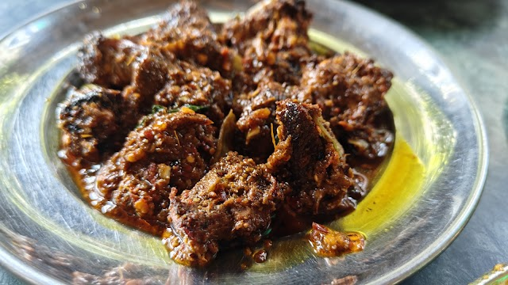
| 営業時間 | 月・火・水・木・金・土・日 8:00〜21:00 |
|---|---|
| 定休日 | なし(要最終確認) |
| 住所 | 〒44614 カトマンズ M7QX+6J4 |
| 予約 | 可 — ☎ 01-5380273 |
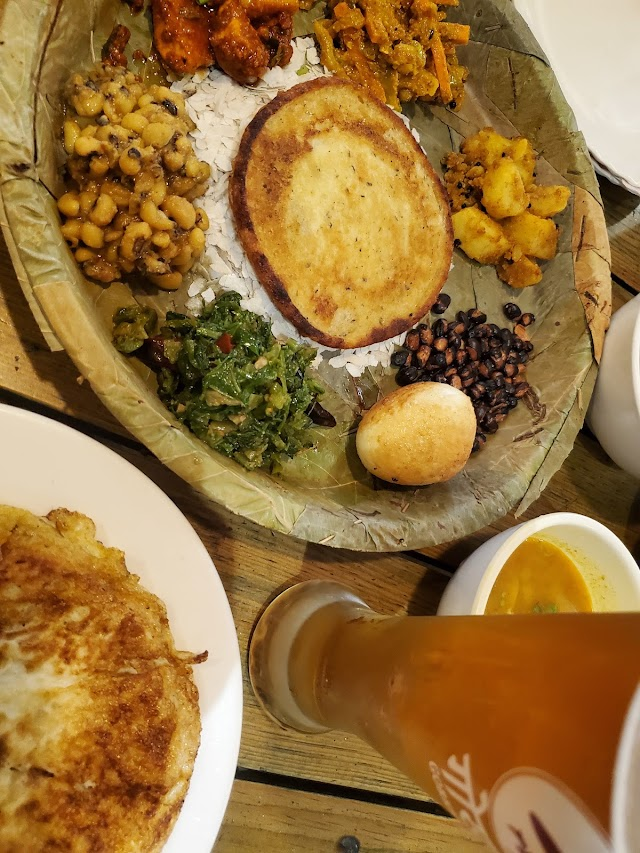
| 営業時間 | 月・火・水・木・金・日 11:55〜22:00 ／ 土 12:30〜22:00 |
|---|---|
| 定休日 | なし(要最終確認) |
| 住所 | Uttar Kuna Shanti Bagaicha Rd, Lalitpur 44600 ネパール |
| 予約 | 可 — ☎ 980-1056357 |
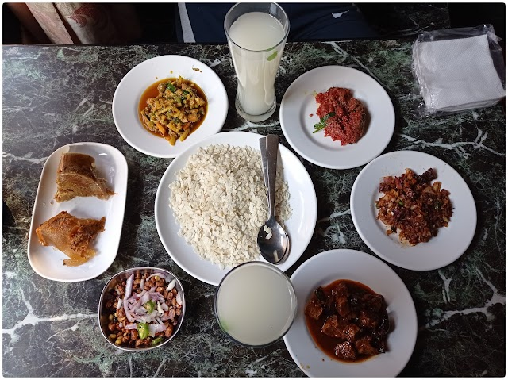
| 営業時間 | 月・火・水・木・金・土・日 10:00〜22:00 |
|---|---|
| 定休日 | なし(要最終確認) |
| 住所 | Kwalakhu Rd, Lalitpur 44600 ネパール |
| 予約 | 要確認 — ☎ 984-1484272 |
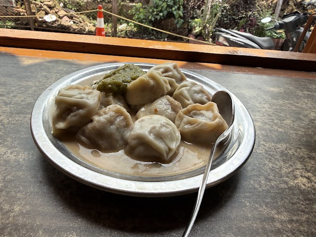
| 営業時間 | 月・火・水・木 11:30〜21:30 ／ 金・土・日 11:30〜22:00 |
|---|---|
| 定休日 | なし(要最終確認) |
| 住所 | P835+G8F, 99 Layaku Marg, Kathmandu 44600 ネパール |
| 予約 | 要確認 — ☎ 980-8149503 ／ 公式サイト |
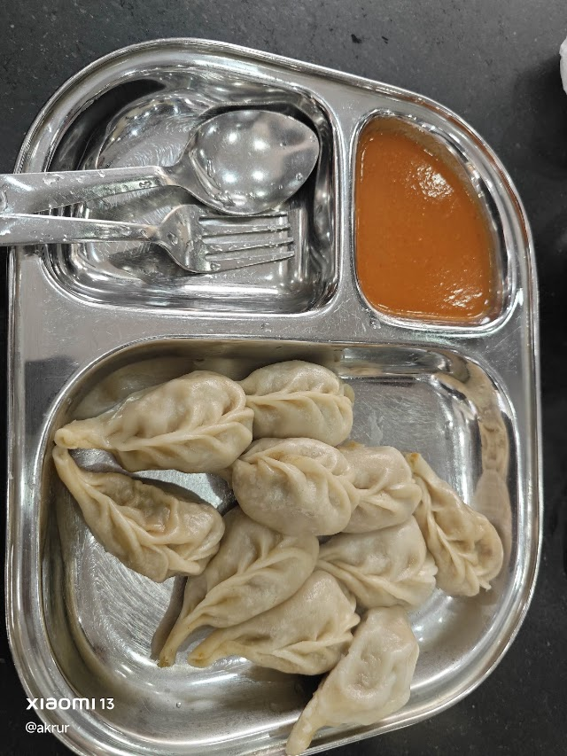
| 営業時間 | 月・火・水・木・金・土 10:30〜21:00 ／ 日 10:00〜21:00 |
|---|---|
| 定休日 | なし(要最終確認) |
| 住所 | M8MM+C9J, Shree Nagar Marg, Kathmandu 44600 ネパール |
| 予約 | 要確認 — ☎ 974-1662356 |
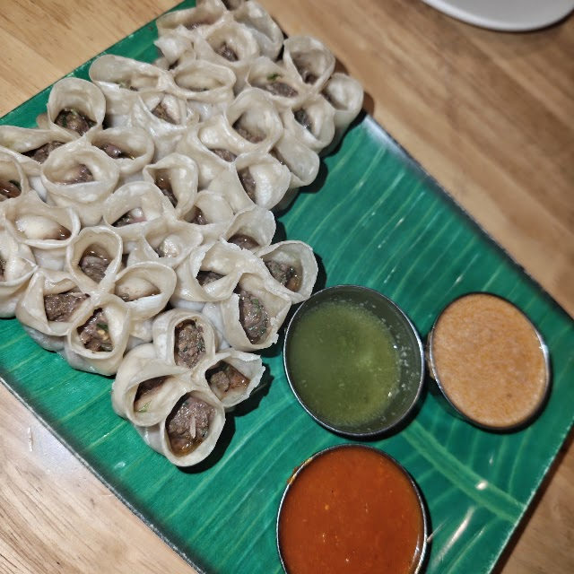
| 営業時間 | 月・火・水・木・金・土・日 12:00〜21:00 |
|---|---|
| 定休日 | なし(要最終確認) |
| 住所 | 〒44700 パタン M8G7+CM9 |
| 予約 | 可 — ☎ 01-5428703 ／ 公式サイト |
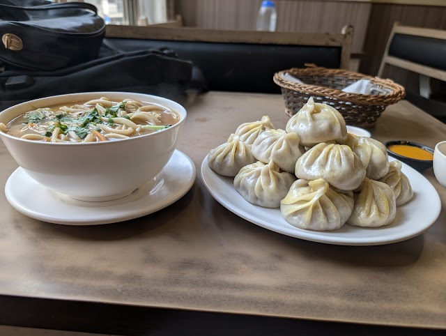
| 営業時間 | 月・火・水・木・金・土・日 11:00〜20:00 |
|---|---|
| 定休日 | なし(要最終確認) |
| 住所 | Boudha Sadak, Kathmandu 44600 ネパール |
| 予約 | 可 — ☎ 01-4917294 |
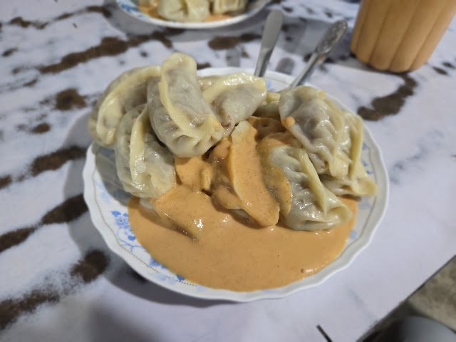
| 営業時間 | 月・火・水・木・金・土・日 12:00〜19:00 |
|---|---|
| 定休日 | なし(要最終確認) |
| 住所 | 〒44600 ブダニールカンタ P8HW+GX4 |
| 予約 | 要確認 — ☎ 986-0078052 |
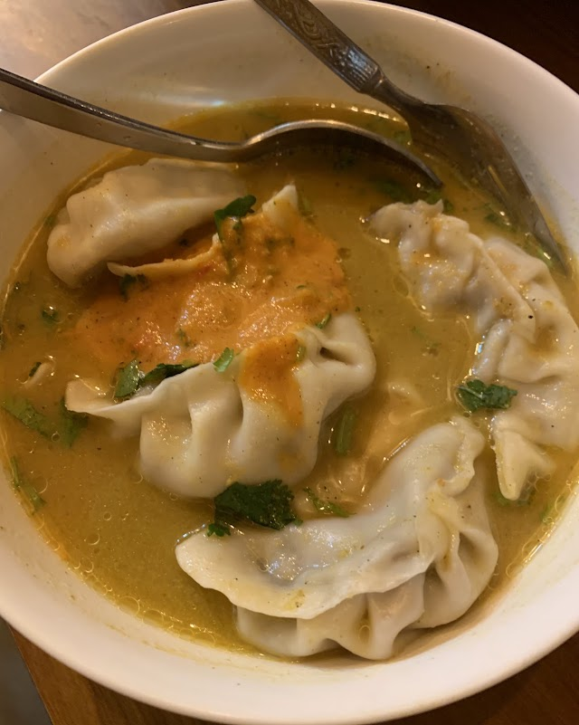
| 営業時間 | 月・火・水・木・金・土・日 11:30〜20:00 |
|---|---|
| 定休日 | なし(要最終確認) |
| 住所 | महाराजगंज रोड, Kathmandu 44600 ネパール |
| 予約 | 要確認 — ☎ 01-4720354 |
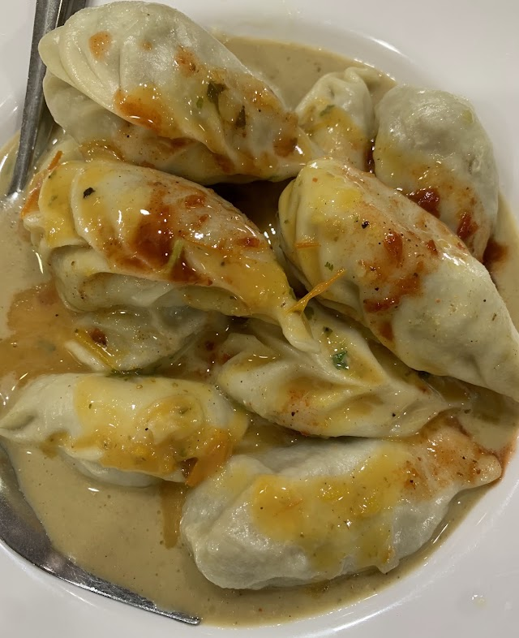
| 営業時間 | 月・火・水・木・金・土・日 10:00〜20:00 |
|---|---|
| 定休日 | なし(要最終確認) |
| 住所 | Patandhoka Road, Lalitpur 44700 ネパール |
| 予約 | 要確認 — ☎ 980-8429600 |
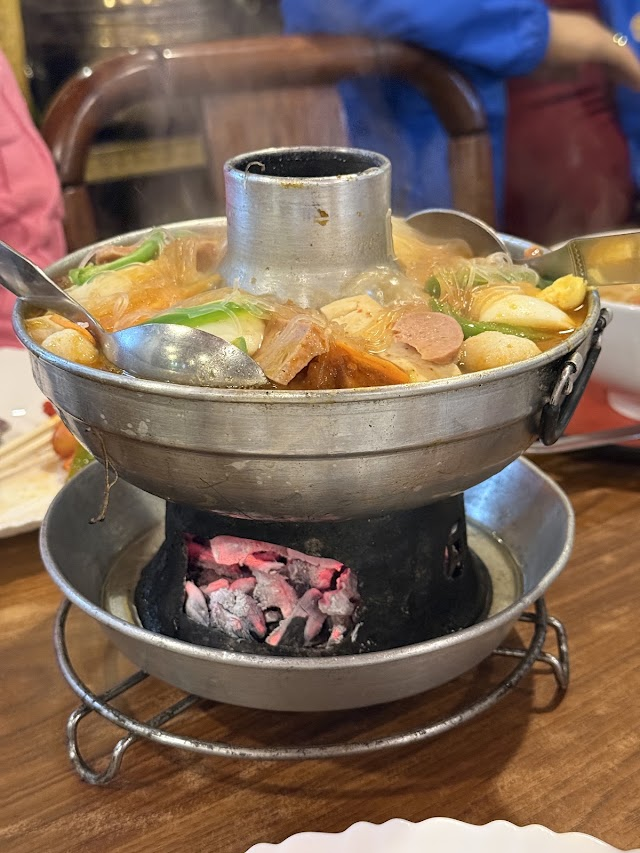
| 営業時間 | 月・火・水・木・金・土・日 8:00〜22:00 |
|---|---|
| 定休日 | なし(要最終確認) |
| 住所 | Amrit Marg, Kathmandu 44600 ネパール |
| 予約 | 可 — ☎ 01-5353417 ／ 公式サイト |
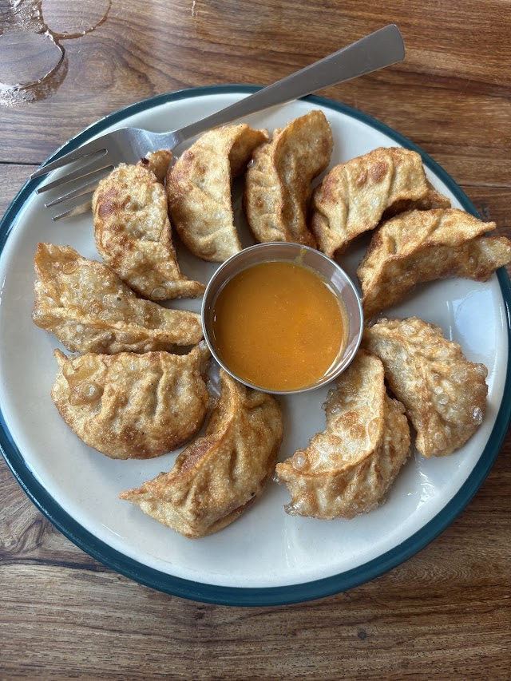
| 営業時間 | 月・火・水・木・金・日 12:00〜21:00 |
|---|---|
| 定休日 | 土曜 |
| 住所 | P884+GV9, Kaldhara Marg, Kathmandu 44600 ネパール |
| 予約 | 可 — ☎ 01-5357408 ／ 公式サイト |
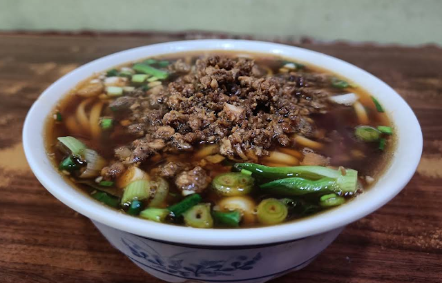
| 営業時間 | 月・火・水・木・金・土・日 6:00〜21:00 |
|---|---|
| 定休日 | なし(要最終確認) |
| 住所 | 44600, काठमाडौँ 44600 ネパール |
| 予約 | 要確認 — ☎ 980-8417089 ／ 公式サイト |
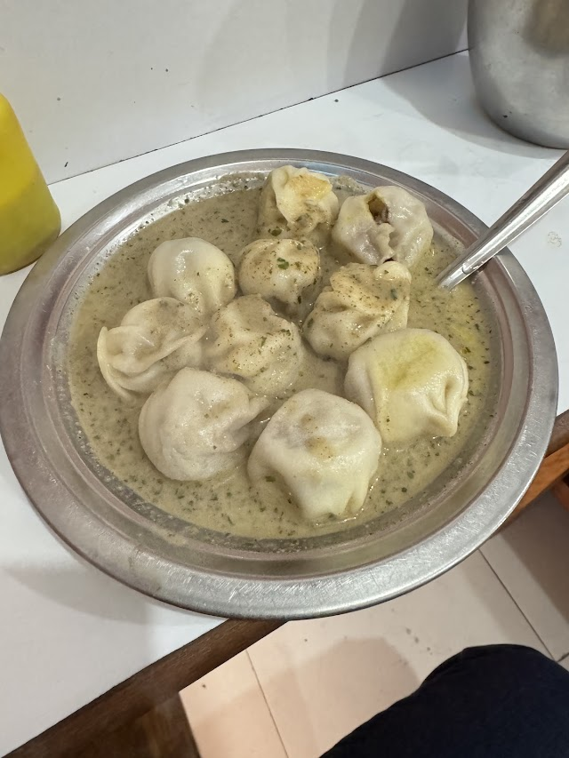
| 営業時間 | 月・火・水・木・金・日 11:30〜20:00 ／ 土 13:00〜20:00 |
|---|---|
| 定休日 | なし(要最終確認) |
| 住所 | Thirbum Marg, Kathmandu 44600 ネパール |
| 予約 | 要確認 — ☎ 982-7866952 |
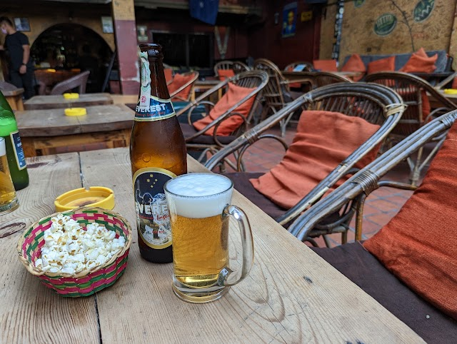
| 営業時間 | 火・水・木・金・土・日 16:00〜0:00 |
|---|---|
| 定休日 | 月曜 |
| 住所 | P886+H24, Chaksibari Marg, Kathmandu 44600 ネパール |
| 予約 | 要確認 — ☎ 984-9494779 |
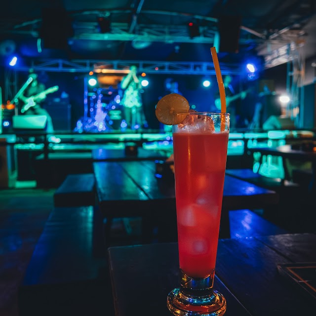
| 営業時間 | 月・火・水・木・日 16:30〜2:30 ／ 金・土 16:30〜4:00 |
|---|---|
| 定休日 | なし(要最終確認) |
| 住所 | P876+W3H, Chaksibari Marg, Kathmandu 44600 ネパール |
| 予約 | 可 — ☎ 984-6195216 |
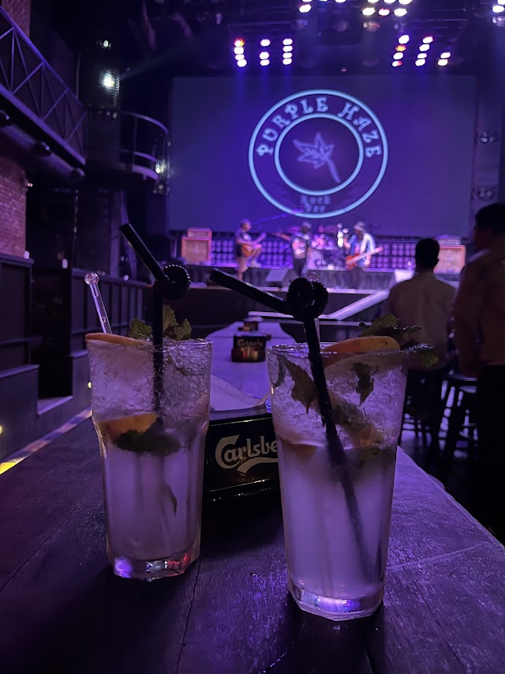
| 営業時間 | 月・火・水・木・金・土・日 19:00〜1:30 |
|---|---|
| 定休日 | なし(要最終確認) |
| 住所 | Paryatan Marg, Kathmandu 44600 ネパール |
| 予約 | 可 — ☎ 01-5910126 ／ 公式サイト |
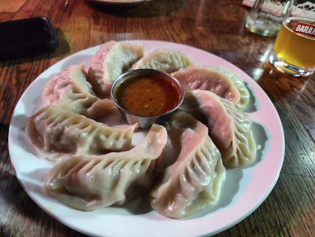
| 営業時間 | 月・火・水・木・金・土・日 12:00〜0:00 |
|---|---|
| 定休日 | なし(要最終確認) |
| 住所 | Lazimpat Rd, Kathmandu 44600 ネパール |
| 予約 | 可 — ☎ 01-4516983 ／ 公式サイト |
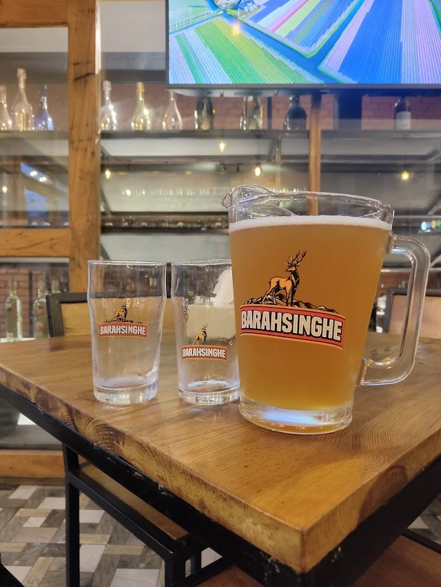
| 営業時間 | 月・火・水・木・金・土・日 12:00〜22:00 |
|---|---|
| 定休日 | なし(要最終確認) |
| 住所 | 1135 Manbhawan Rd, Lalitpur 44600 ネパール |
| 予約 | 可 — ☎ 970-5421306 |
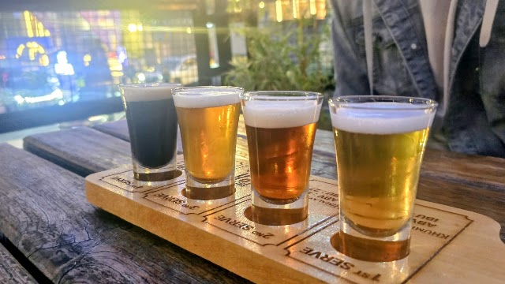
| 営業時間 | 月・火・水・木・金・土・日 12:00〜23:00 |
|---|---|
| 定休日 | なし(要最終確認) |
| 住所 | 〒44600 パタン M8H7+CQW |
| 予約 | 可 — ☎ 980-1905850 |
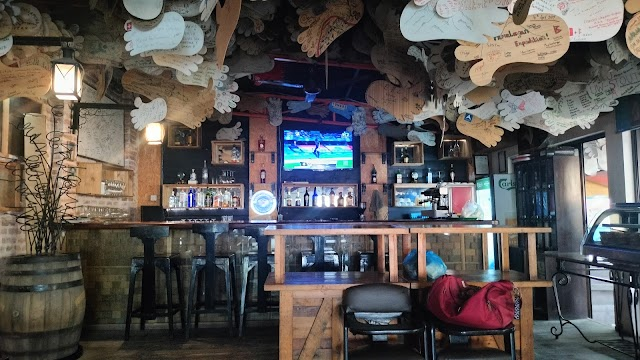
| 営業時間 | 11:00〜22:30 |
|---|---|
| 定休日 | 無休 |
| 住所 | Bhupi Sherchan Marg, Kathmandu 44605 ネパール |
| 予約 | 要確認 — ☎ 01-4521420 ／ 公式サイト |
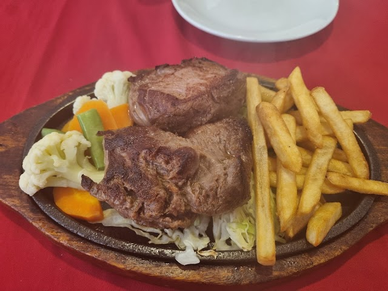
| 営業時間 | 月・火・水・木・金・土・日 10:00〜22:00 |
|---|---|
| 定休日 | なし(要最終確認) |
| 住所 | 17 JP Rd, Kathmandu 44600 ネパール |
| 予約 | 可 — ☎ 976-1660465 ／ 公式サイト |
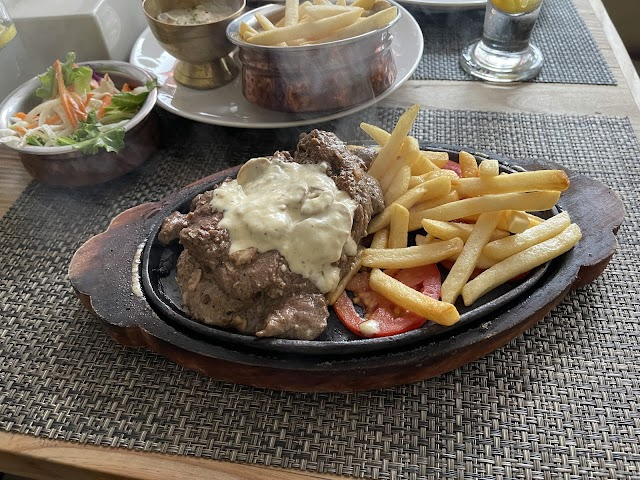
| 営業時間 | 月・火・水・木・金・土・日 10:00〜22:00 |
|---|---|
| 定休日 | なし(要最終確認) |
| 住所 | P876+V97 Tourism, Paryatan Marg, Kathmandu 44600 ネパール |
| 予約 | 可 — ☎ 984-1222133 ／ 公式サイト |
| 営業時間 | 月・火・水・木・金・土・日 12:00〜0:00 |
|---|---|
| 定休日 | なし(要最終確認) |
| 住所 | 〒44600 カトマンズ |
| 予約 | 可 — ☎ 01-4579488 ／ 公式サイト |
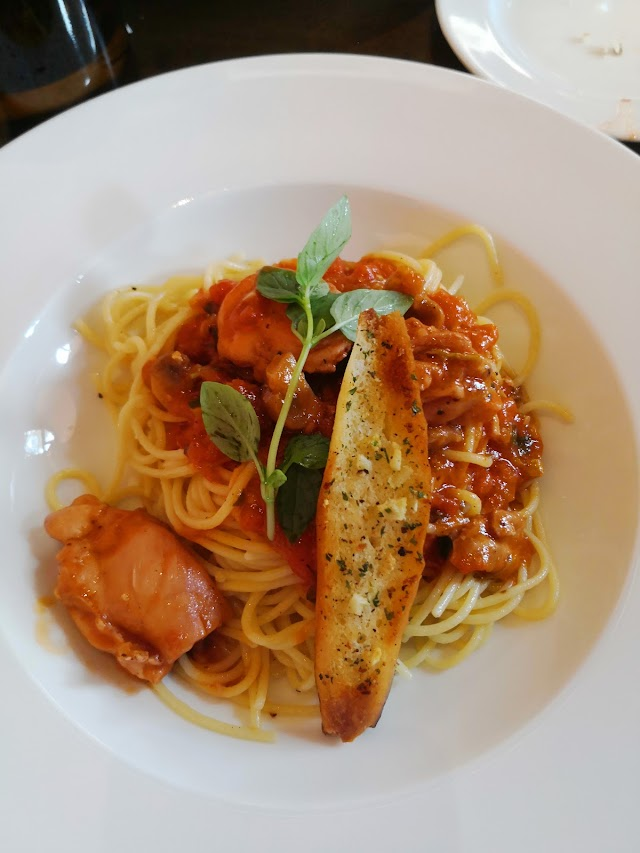
| 営業時間 | 月・火・水・木・金・土・日 12:00〜22:30 |
|---|---|
| 定休日 | なし(要最終確認) |
| 住所 | Hotel Yak & Yeti, Durbar Marg, Kathmandu 44600 ネパール |
| 予約 | 可 — ☎ 01-4248999 ／ 公式サイト |
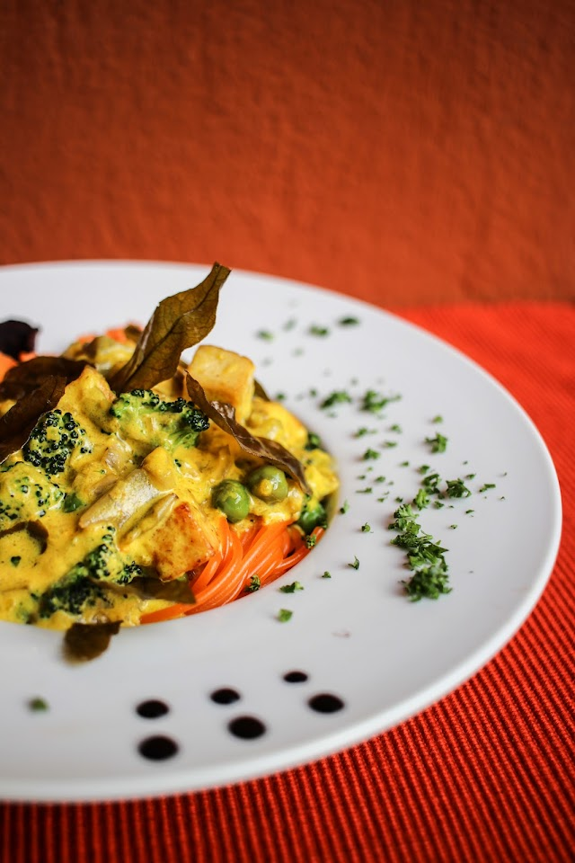
| 営業時間 | 月・火・水・木・金・土・日 8:00〜21:00 |
|---|---|
| 定休日 | なし(要最終確認) |
| 住所 | Tanka Prasad Ghumti Sadak, काठमाडौँ 44600 ネパール |
| 予約 | 可 — ☎ 01-5363070 ／ 公式サイト |
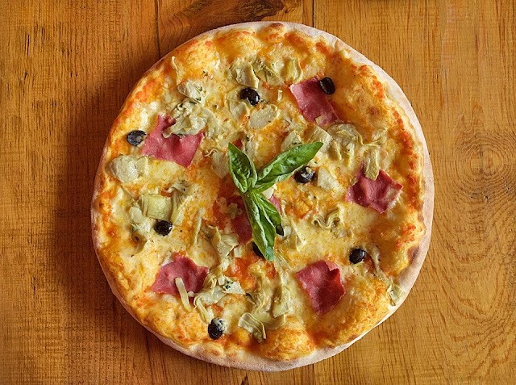
| 営業時間 | 月・火・水・木・金・土・日 11:00〜23:00 |
|---|---|
| 定休日 | なし(要最終確認) |
| 住所 | 〒44600 カトマンズ |
| 予約 | 可 — ☎ 01-5350210 ／ 公式サイト |
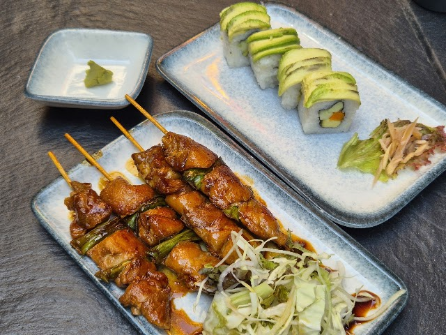
| 営業時間 | 月・火・水・木・金・土・日 11:00〜21:00 |
|---|---|
| 定休日 | なし(要最終確認) |
| 住所 | Thamel Marg, Kathmandu 44600 ネパール |
| 予約 | 可 — ☎ 01-4517670 |
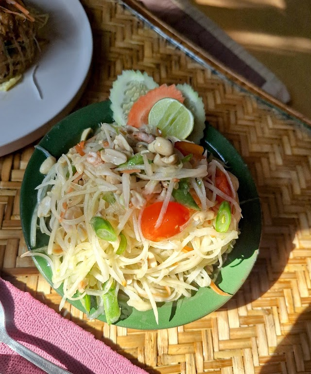
| 営業時間 | 月・火・水・木・金・土・日 11:00〜22:00 |
|---|---|
| 定休日 | なし(要最終確認) |
| 住所 | J.P. Road, Kathmandu 44600 ネパール |
| 予約 | 可 — ☎ 01-4701510 ／ 公式サイト |
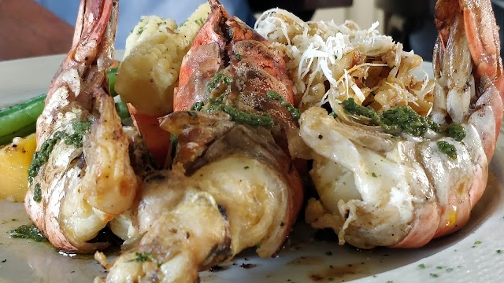
| 営業時間 | 月・火・水・木・金・土・日 7:00〜22:00 |
|---|---|
| 定休日 | なし(要最終確認) |
| 住所 | 〒44600 カトマンズ |
| 予約 | 可 — ☎ 974-8300064 ／ 公式サイト |
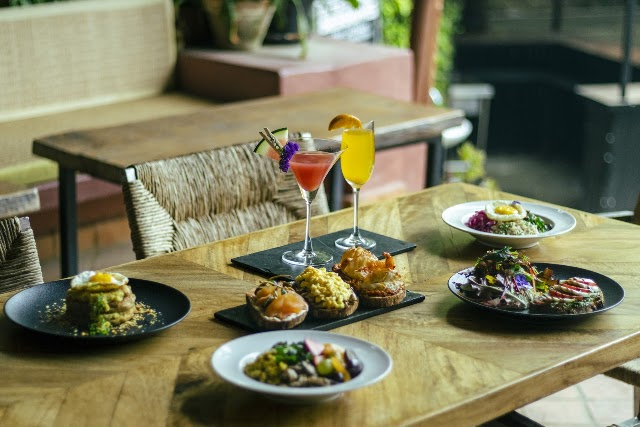
| 営業時間 | 月・火・水・木・金 11:00〜22:00 ／ 土 8:00〜22:00 ／ 日 9:00〜22:00 |
|---|---|
| 定休日 | なし(要最終確認) |
| 住所 | Le Sherpa Farmers Market (Opposite of President's House, Kathmandu 44600 ネパール |
| 予約 | 可 — ☎ 01-4528604 ／ 公式サイト |
| 営業時間 | 月・火・水・木・金・土・日 9:00〜22:00 |
|---|---|
| 定休日 | なし(要最終確認) |
| 住所 | Mandala Street, Kathmandu 44600 ネパール |
| 予約 | 要確認 — ☎ 01-4522097 |
| 営業時間 | 12:00〜15:00／18:30〜22:30 |
|---|---|
| 定休日 | 無休 |
| 住所 | Taragaon, Boudha, Box 9609, Hyatt Regency, काठमाडौँ 44601 ネパール |
| 予約 | 可 — ☎ 980-1031235 ／ 公式サイト |
| 営業時間 | 月・火・水・木・金・土・日 9:00〜21:30 |
|---|---|
| 定休日 | なし(要最終確認) |
| 住所 | Jawalakhel Rd, Lalitpur 44600 ネパール |
| 予約 | 可 — ☎ 01-5427809 |
| 営業時間 | 月・火・水・木・金・土・日 7:00〜20:00 |
|---|---|
| 定休日 | なし(要最終確認) |
| 住所 | 〒44700 パタン |
| 予約 | 要確認 — ☎ 984-3767232 ／ 公式サイト |
| 営業時間 | 月・火 7:00〜22:00 ／ 水・木・金・土・日 6:00〜22:00 |
|---|---|
| 定休日 | なし(要最終確認) |
| 住所 | Woodland, Durbar Marg, Kathmandu 44605 ネパール |
| 予約 | 可 — ☎ 981-3052697 ／ 公式サイト |
| 営業時間 | 月・火・水・木・金・日 7:00〜21:00 ／ 土 19:00〜21:00 |
|---|---|
| 定休日 | なし(要最終確認) |
| 住所 | P88M+JWJ, Nyalma Marg, Kathmandu 44600 ネパール |
| 予約 | 要確認 — ☎ 982-8252603 |
| 営業時間 | 月・火・水・木・金・土・日 7:00〜20:00 |
|---|---|
| 定休日 | なし(要最終確認) |
| 住所 | Tushal, Kathmandu 44600 ネパール |
| 予約 | 要確認 — ☎ 980-3343499 ／ 公式サイト |
| 営業時間 | 月・火・水・木・金・日 8:00〜19:30 ／ 土 8:00〜16:30 |
|---|---|
| 定休日 | なし(要最終確認) |
| 住所 | Opposite Mangaldvip Boarding School, Phulbari- Ramhiti, 6 बौद्ध सडक, काठमाडौँ 44600 ネパール |
| 予約 | 可 — ☎ 980-8991305 |
| 営業時間 | 月・火・水・木・金・土・日 7:00〜20:00 |
|---|---|
| 定休日 | なし(要最終確認) |
| 住所 | Nhusa Marg, Kathmandu 44600 ネパール |
| 予約 | 要確認 — ☎ 01-4246606 ／ 公式サイト |
| 営業時間 | 月・火・水・木・金・土・日 7:00〜21:00 |
|---|---|
| 定休日 | なし(要最終確認) |
| 住所 | M8HC+68H, Patandhoka Road, Lalitpur 44700 ネパール |
| 予約 | 可 — ☎ 01-5422113 |
| 営業時間 | 月・火・水・木・金・土・日 6:00〜20:00 |
|---|---|
| 定休日 | なし(要最終確認) |
| 住所 | Jhamsikhel Road, Lalitpur 44600 ネパール |
| 予約 | 要確認 — ☎ 01-5424900 ／ 公式サイト |
| 営業時間 | 月・火・水・木・金・土・日 6:30〜21:30 |
|---|---|
| 定休日 | なし(要最終確認) |
| 住所 | Paryatan Marg, Kathmandu 44600 ネパール |
| 予約 | 要確認 — ☎ 982-6045931 ／ 公式サイト |
| 営業時間 | 月・火・水・木・金・土・日 7:30〜21:00 |
|---|---|
| 定休日 | なし(要最終確認) |
| 住所 | Bakhundole, Lalitpur 44600 ネパール |
| 予約 | 要確認 — ☎ 986-0431504 ／ 公式サイト |
| 営業時間 | 月・火・水・木・金・土・日 8:00〜21:00 |
|---|---|
| 定休日 | なし(要最終確認) |
| 住所 | Durbar Square Road, Bhaktapur 44800 ネパール |
| 予約 | 要確認 — ☎ 980-3459191 |
本ガイドは個人利用目的で作成。掲載情報は2026年8月時点の調査に基づく。写真出典: Google Maps投稿写真(©各投稿者/Google)。